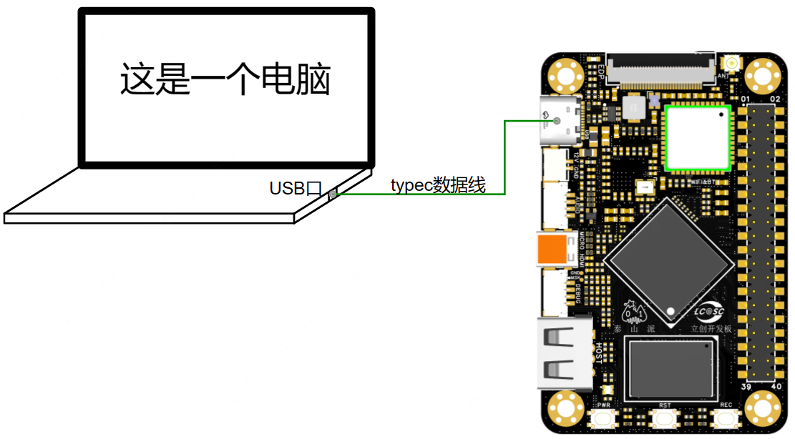
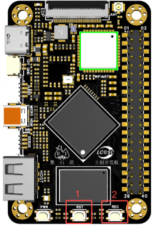
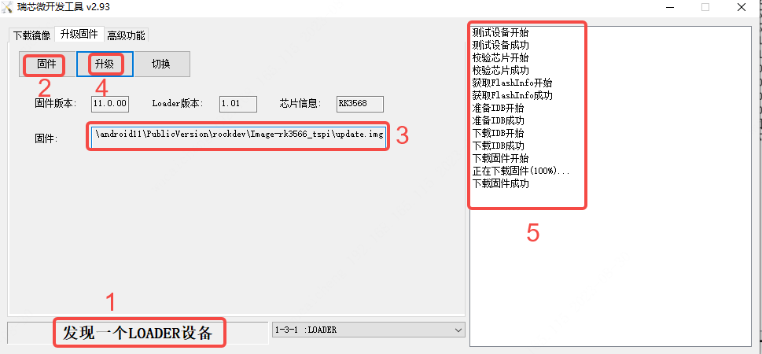
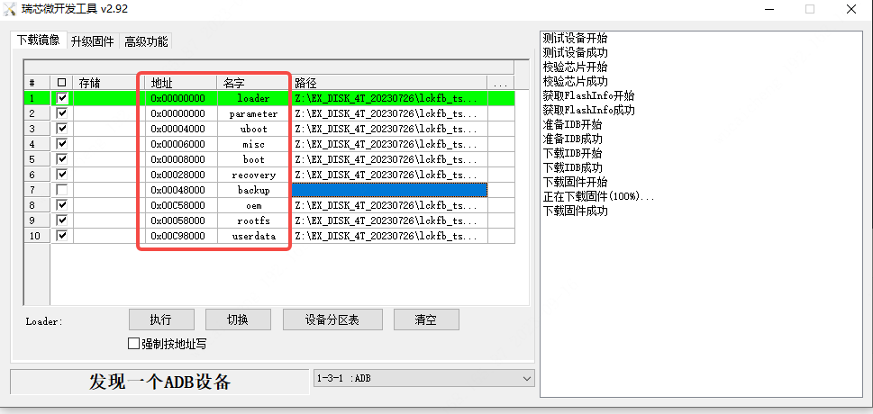

<!DOCTYPE lake>
<h1 data-lake-id="Qec5v" data-lake-index-type="2" id="Qec5v"><span data-lake-id="ubbae7ef3" id="ubbae7ef3">完整镜像烧录</span></h1><p data-lake-id="uc5d6ff16" id="uc5d6ff16"></p><p data-lake-id="ue8c51054" id="ue8c51054"><strong><span data-lake-id="u2d11adbe" id="u2d11adbe" style="color: rgb(60, 60, 67)">Loader升级模式</span></strong></p><p data-lake-id="ueed20cbf" id="ueed20cbf"><span data-lake-id="u7bbcb7d3" id="u7bbcb7d3"> </span></p><table class="lake-table" data-lake-id="xMfWc" id="xMfWc" margin="true" style="width: 503px" width-mode="contain"><colgroup><col width="128"/><col width="375"/></colgroup><tbody><tr data-lake-id="u2bbee4b0" id="u2bbee4b0"><td data-lake-id="u1faf2220" id="u1faf2220"><p data-lake-id="u99553f1d" id="u99553f1d"><span data-lake-id="ub649bc43" id="ub649bc43">1</span></p></td><td data-lake-id="uc0ad7b29" id="uc0ad7b29"><p data-lake-id="u2ab22fac" id="u2ab22fac"><span data-lake-id="u6727db14" id="u6727db14">RST(Reset)</span></p></td></tr><tr data-lake-id="ud54b368c" id="ud54b368c"><td data-lake-id="ue94b07fd" id="ue94b07fd"><p data-lake-id="u88b4f758" id="u88b4f758"><span data-lake-id="u3eeef6fe" id="u3eeef6fe">2</span></p></td><td data-lake-id="u80e3b9ef" id="u80e3b9ef"><p data-lake-id="u4129947a" id="u4129947a"><span data-lake-id="u08b9f8c0" id="u08b9f8c0">REC(Recovery)</span></p></td></tr></tbody></table><p data-lake-id="ud7c00d3a" id="ud7c00d3a"><span class="lake-fontsize-12" data-lake-id="u6b47611a" id="u6b47611a" style="color: rgb(60, 60, 67)">泰山派开发板下面板载了三个按键，进入Loader升级模式主要用到两个按键分别是RST与REC</span></p><p data-lake-id="u2bd46479" id="u2bd46479"><span class="lake-fontsize-12" data-lake-id="u7776bac9" id="u7776bac9" style="color: rgb(60, 60, 67)">进入Loader升级模式方法:</span></p><p data-lake-id="u52301de5" id="u52301de5"><span class="lake-fontsize-12" data-lake-id="u29137a39" id="u29137a39" style="color: rgb(60, 60, 67)">先按住REC按钮不放，接着按下RST复位按键并松开</span></p><p data-lake-id="ua88ccdd0" id="ua88ccdd0"><span class="lake-fontsize-12" data-lake-id="ua7c6bebe" id="ua7c6bebe" style="color: rgb(60, 60, 67)">当烧录软件中出现“发现一个LOADER设备”后松开REC按钮，下面就可以进行升级操作了。</span></p><p data-lake-id="udf8157d5" id="udf8157d5"></p><h1 data-lake-id="q9ygc" data-lake-index-type="2" id="q9ygc"><span data-lake-id="u0ceac0c8" id="u0ceac0c8">烧录单独镜像</span></h1><ol list="u450a62d5"><li data-lake-id="uc005e3c5" fid="u87c7e5c4" id="uc005e3c5"><span data-lake-id="uac5e3301" id="uac5e3301">导入</span><code data-lake-id="ubd556c69" id="ubd556c69"><span data-lake-id="ubc27ea85" id="ubc27ea85">Tspi_Linux_config.cfg</span></code><span data-lake-id="u5feda54d" id="u5feda54d">配置文件</span></li><li data-lake-id="u5bd20fde" fid="u87c7e5c4" id="u5bd20fde"><span data-lake-id="ua306a524" id="ua306a524">填写分区镜像路径即可烧录</span></li></ol><p data-lake-id="u9fd0993e" id="u9fd0993e"></p><blockquote data-lake-id="u83b6e1dd" id="u83b6e1dd"><p data-lake-id="u28cef349" id="u28cef349"><span data-lake-id="u21952ef2" id="u21952ef2">可以通过</span><code data-lake-id="u03e12527" id="u03e12527"><span data-lake-id="u5c5047fa" id="u5c5047fa">cat /etc/issue</span></code><span data-lake-id="u062c74df" id="u062c74df">查看系统欢迎信息</span></p></blockquote>